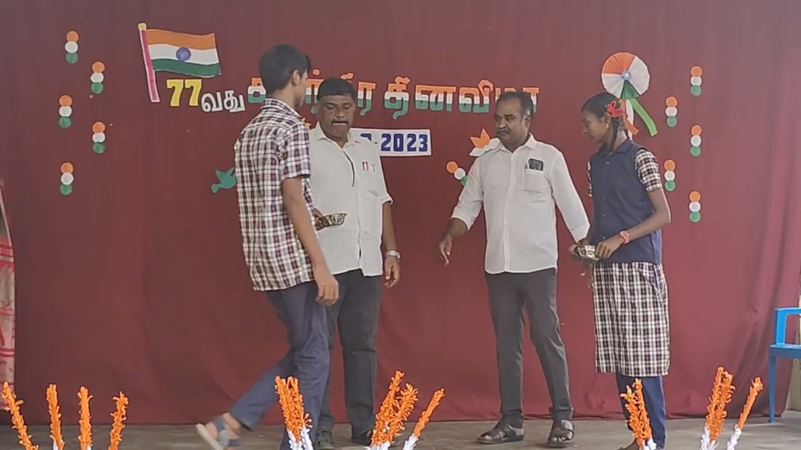
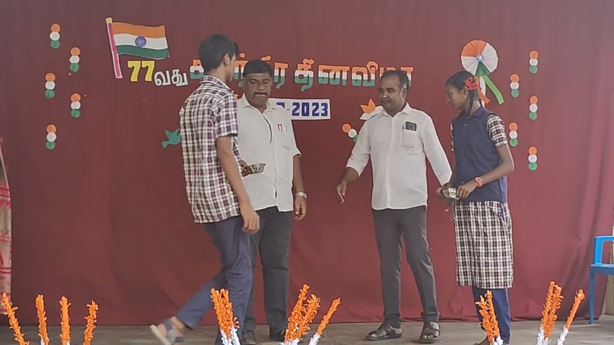
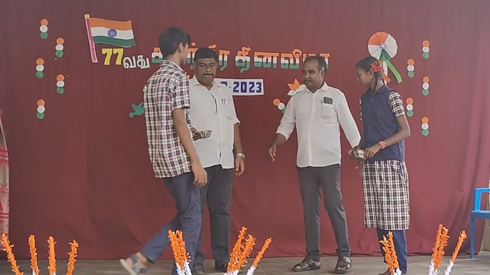
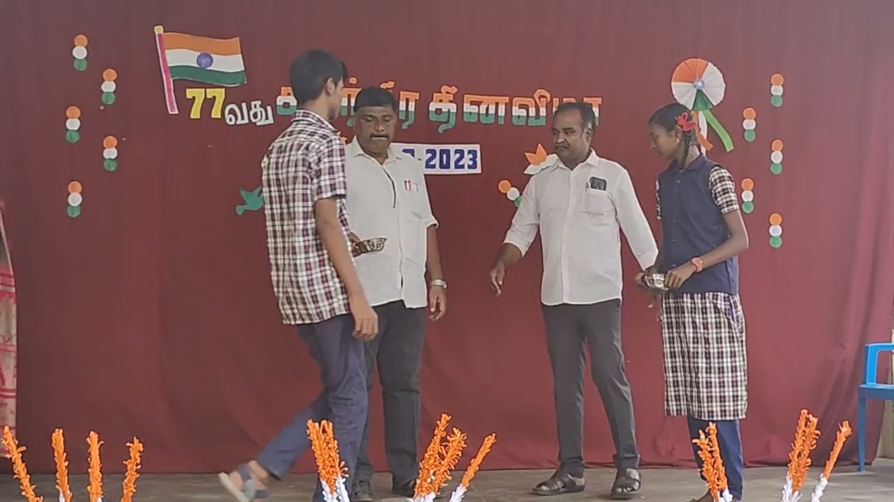
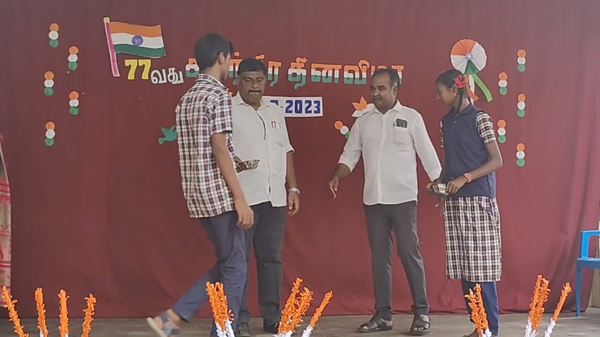

üè†
Home
⏮️
Previous
üè´
ST.Joseph's High School,Samayanallur
üè´
ST.John Britto Nursery And Primary School , Samayanallur
üè´
ST.Joseph's Primary School, Samayanallur
üè´
R.C. Middle School,Sholavandan
⏭️
Next
CATHOLIC INSTITUTIONS RUN BY THE DIOCESE IN THE PARISH
There Are Four Kinds Of Institution Which Has Been Run By Our Parish
1.ST.Joseph's High School,Samayanallur
()
ST.John Britto Nursery And Primary School, Samayanallur
()
ST.Joseph's Primary School ,Samayanallur
()
R.C. Middle School,Sholavandan
()
 () ()
() ()